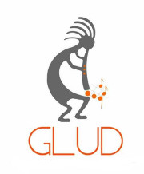

 Nosostros somos el Grupo de trabajo académico GNU/Linux de la Universidad Distrital Francisco José de Caldas, Bogotá, Colombia.
Fomentamos el uso, apropiación y desarrollo de tecnologías libres buscando su integración al desarrollo económico y social de la ciudad–región, con proyección en el ámbito nacional e internacional.
Piensa Libre, Vive Libre.Lider del Proyecto. Estudiante de Ing. Electrónica
Amante de gomitas y software libre, lo suficientemente loco para buscar hacer un cambio en el mundo.
Estudiante de Ing. de Sistemas
Nunc lacinia ante nunc ac lobortis. Interdum adipiscing gravida odio porttitor sem non mi integer non faucibus ornare mi ut ante amet placerat aliquet. Volutpat eu sed ante lacinia sapien lorem accumsan varius montes viverra nibh in adipiscing blandit tempus accumsan.
Estudiante de Ing. Catastral y Geodesia
Estudiante tiempo completo, comprometida con el desarrollo social y ambiental, me interesa la ciencia, el arte y la tecnología bajo la Filosofía del Sofware Libre.
"El esfuerzo siempre valdrá la pena, sé fuerte y serás libre"